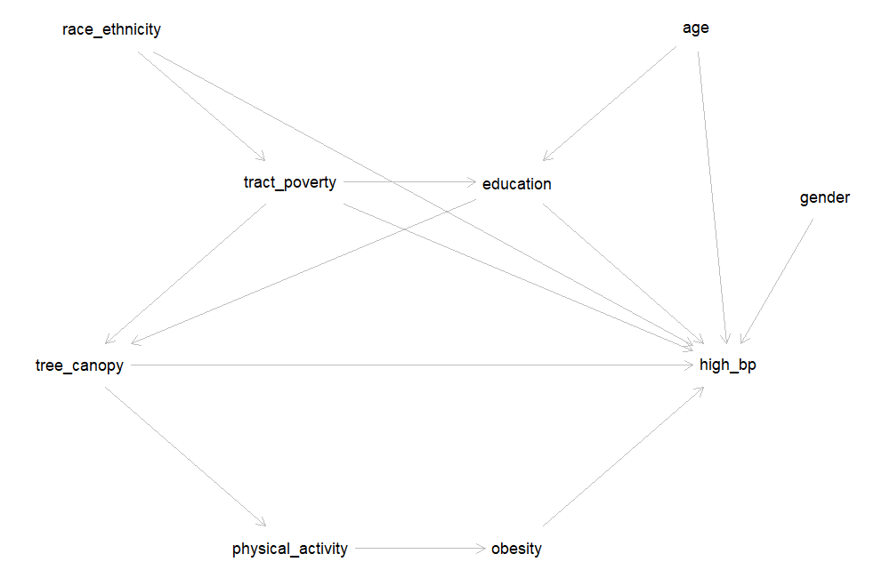
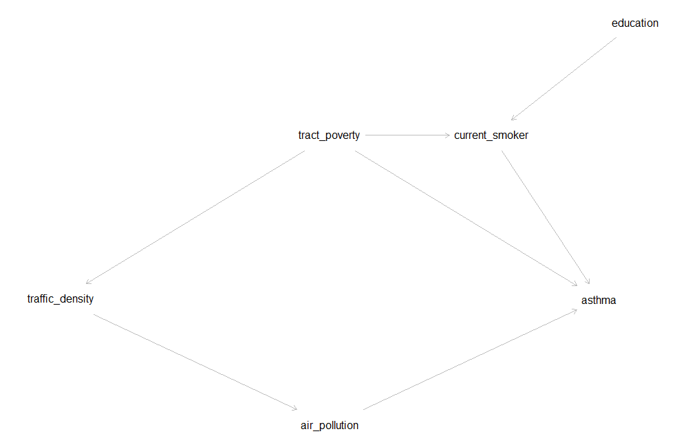

Lesson 6: Confounding & Directed Acyclic Graphs (DAGs)
EOH 635 — Environmental Epidemiology Methods
In Lesson 5 you fit a crude (unadjusted) model for tree canopy and high blood pressure. This lesson asks whether that crude estimate is distorted by confounding — a third variable that is related to both the exposure and the outcome — and what to adjust for. It has two parts:
- Choosing confounders with a DAG — reading a directed acyclic graph for tree canopy and high blood pressure, sorting the paths that connect them into causal and backdoor paths, and finding a minimally sufficient adjustment set. A separate video tutorial shows how to draw and analyze a DAG with DAGitty.
- Checking confounding in the data with the change-in-estimate approach — adding each candidate variable to the model one at a time, calculating how much the estimate changes, and fitting a final adjusted model.
Both parts end with a 🧠 Your Turn for the exposure and outcome in your own project. Together they produce the DAG, change-in-estimate table, and final adjustment set that Milestone 3 asks for.
The gray boxes below are live R editors — the code actually runs in your browser (no install needed). Click the green Run Code arrow in the top-left corner of a box to run it. The output will appear directly underneath.
You can also edit the code first — click inside the box, change something, then click Run Code to run your edited version. Nothing you do here can break anything; if you make a mess, just refresh the page to start that box over.
Sections marked 🧠 Your Turn give you a task and a blank or partially blank code editor. Try writing the code yourself before revealing the solution, hidden in a collapsed box underneath. Boxes labeled 💡 Answers work the same way: think through the questions first, then click to check your reasoning.
A note on browser vs. RStudio code: chunks labeled #| autorun: true fetch data from the web in the background so it’s available in your browser. When you write your own scripts in RStudio, you will not include this fetching code. Immediately after each one, a green box labeled “In your RStudio script” shows the simpler code you’ll actually use.
This tutorial uses class_data_processed.csv, the same merged file from Lessons 1, 3, 4, and 5. It uses one package you may not have installed yet: sandwich (for robust standard errors). Install it once with install.packages("sandwich"). See the Data Codebook for variable definitions.
Setup
In RStudio:
data <- read.csv(file.path("data_processed", "class_data_processed.csv"))In the browser:
data <- read.csv(file.path("data_processed", "class_data_processed.csv"))Next, recreate two variables from earlier lessons: the cleaned age variable from Lesson 3 (ages above 105 recoded to missing), and the tree canopy coding we settled on at the end of Lesson 5 — top quartile vs. the lower three quartiles.
Lesson 5 concluded that both a continuous term and “top quartile vs. the rest” were defensible codings for tree canopy. We use the binary version here because it keeps each model to a single exposure estimate, which makes the change-in-estimate calculations easy to follow. If your own exposure is continuous, see the box “What if my exposure is continuous?” in Part 2 — there is one extra step.
Part 1: Choosing Confounders with a DAG
Recall the three conditions for a variable to be a confounder. It must:
- Be associated with the exposure;
- Be a risk factor for the outcome (associated with the outcome among the unexposed); and
- Not be on the causal pathway between the exposure and the outcome (that is, not be a mediator).
The third condition can’t be checked with data alone — it depends on what you believe causes what. That is the job of a directed acyclic graph (DAG): you write down your assumptions about the causal structure before looking at the data, and the rules of the DAG tell you which variables need to be adjusted for.
Step 1: Write down the DAG
Here is one DAG for tree canopy and high blood pressure, built from the kind of reasoning you did for your conceptual framework in Week 2:

Each arrow is a claim about cause and effect:
- Tree canopy → high blood pressure — the effect we want to estimate. Tree canopy may also work through physical activity and obesity (greener places encourage activity, which lowers obesity and blood pressure). Those two are mediators: they sit on the causal pathway.
- Education → tree canopy and education → high blood pressure — people with more education (and the income that tends to come with it) are more able to choose to live in greener neighborhoods, and education is independently linked to blood pressure (health care access, diet, job strain).
- Tract poverty → tree canopy and tract poverty → high blood pressure — poorer neighborhoods have historically received less investment in street trees and parks, and neighborhood deprivation affects blood pressure through stress, food access, and other routes. Tract poverty also shapes individual educational opportunity (tract poverty → education).
- Race and ethnicity → tract poverty and race and ethnicity → high blood pressure — here,
race_ethnicitystands for exposure to racism, not biology. Residential segregation and historical policies such as redlining concentrated poverty in some neighborhoods; interpersonal and structural racism also affect blood pressure directly (see the Howe et al. reading). - Age and gender affect blood pressure. Age also affects education (very young adults may not have finished a degree yet). Neither has an arrow into tree canopy: there is no strong reason to believe age or gender determines how green a person’s census tract is.
A separate video tutorial shows how to draw a DAG like this one with DAGitty and have it list the paths and adjustment sets for you. The steps below walk through the same reasoning by hand.
Step 2: Sort the paths between exposure and outcome
A DAG tells us which variables to adjust for by looking at every path connecting the exposure to the outcome — any route along the arrows, regardless of which direction they point.
There are two kinds of paths:
- Causal paths start with an arrow out of the exposure:
tree_canopy -> high_bp, andtree_canopy -> physical_activity -> obesity -> high_bp. These are part of the effect we want to estimate, so we leave them open. - Backdoor paths start with an arrow into the exposure, such as
tree_canopy <- education -> high_bp. These are non-causal: they create an association between tree canopy and blood pressure that is not due to tree canopy at all. Confounding is an open backdoor path. Our goal is to close every one of them.
Adjusting for a variable on a backdoor path closes it. One exception: a variable that has two arrows pointing into it on a path (like education in tree_canopy <- tract_poverty -> education <- age -> high_bp) is a collider. A path through a collider is already closed — and adjusting for the collider would open it.
Questions to consider:
- Which variables do the backdoor paths in the DAG above pass through?
- Why is the path
tree_canopy <- tract_poverty -> education <- age -> high_bpalready closed? - Is there any backdoor path that goes through
gender? Throughphysical_activityorobesity?
- Every backdoor path passes through education, tract poverty, or both, because those are the only two variables with an arrow into tree canopy. Race/ethnicity and age also appear, but only further along paths that already pass through education or tract poverty.
- On that path,
educationis a collider: bothtract_poverty -> educationandage -> educationpoint into it. A collider blocks the path on its own, so the path is closed without any adjustment. - No path goes through
gender. Gender has only one arrow, into high blood pressure, so it cannot create a backdoor path. Physical activity and obesity appear only on the causal path — they are mediators, not confounders.
Step 3: Find the minimally sufficient adjustment set
The minimally sufficient adjustment set is the smallest set of variables that closes every backdoor path while leaving the causal paths open. Because every backdoor path into tree canopy starts with either education or tract poverty, adjusting for education and tract poverty is enough to remove confounding of the tree canopy–high blood pressure association, according to this DAG.
A minimally sufficient set is not the only valid set. For example, {age, education, tract poverty} also closes every backdoor path.
Questions to consider:
- Why isn’t race/ethnicity in the minimal set, even though it affects both tract poverty and high blood pressure?
- Why isn’t age in the minimal set? Would it be wrong to adjust for age?
- What would happen if we adjusted for obesity?
- Race/ethnicity reaches tree canopy only through tract poverty (
race_ethnicity -> tract_poverty -> tree_canopy). Once tract poverty is adjusted for, that path is closed, so race/ethnicity is not needed according to this DAG. If you believed racism also affected tree canopy directly (for example, through discriminatory planting decisions that are not captured by tract poverty), you would add that arrow, and race/ethnicity would join the adjustment set. The DAG is only as good as the assumptions you put into it. - Age has no arrow into tree canopy, so it can’t confound on its own; its only backdoor path runs through education, which is already adjusted for. But {age, education, tract poverty} is also a valid set. Adjusting for a strong risk factor for the outcome that is not related to the exposure won’t introduce bias and can make the estimate more precise.
- Adjusting for obesity closes
tree_canopy -> physical_activity -> obesity -> high_bp— part of the causal effect. The adjusted estimate would then describe only the part of tree canopy’s effect that does not operate through obesity. That is overadjustment: removing part of the effect you set out to measure.
Following Howe et al. (2022), a DAG for a racialized health disparity should represent racism — not race itself — as the cause, because race is a social construct and not a biological cause of disease. In our class dataset, race_ethnicity is the only available measure, so in this DAG it stands in for exposure to structural and interpersonal racism. When you describe your own DAG, say what each variable represents.
Using your project’s exposure and outcome:
- Start from your conceptual framework (Milestone 1). List the variables that might cause your exposure, your outcome, or both, and any mediators. Include important variables even if they are not in the dataset, and mark them as unmeasured.
- Draw the DAG, following the DAGitty video tutorial.
- Sort the paths into causal and backdoor paths. Which variables are in your minimally sufficient adjustment set? Does any set work if some variables are unmeasured?
Here is one DAG for traffic density and asthma:

Its arrows are:
traffic_density -> air_pollution -> asthmatract_poverty -> traffic_density,tract_poverty -> asthma, andtract_poverty -> current_smokereducation -> current_smokercurrent_smoker -> asthma
In this DAG, tract poverty is the only variable on a backdoor path (traffic_density <- tract_poverty -> asthma, and traffic_density <- tract_poverty -> current_smoker -> asthma), so the minimally sufficient adjustment set is {tract_poverty}. Smoking is a strong risk factor for asthma, but in this DAG it does not cause traffic density, so it does not need to be adjusted for to remove confounding. Air pollution is a mediator and should not be adjusted for.
Someone else might reasonably draw this DAG differently — for example, with an arrow from smoking or education to where people live. That is why the DAG is part of what you justify in Milestone 3.
Part 2: Checking Confounding in the Data — Change in Estimate
The DAG is built from theory, before looking at the data. The change-in-estimate approach is empirical: it shows how much the exposure estimate actually moves when a variable is added to the model. Using both together is common practice:
- Use the DAG to identify your candidate confounders.
- Add each candidate to the crude model one at a time and calculate the percent change in the exposure estimate.
- Use the DAG and the change-in-estimate results together to choose your final adjustment set.
Step 1: The crude model (a reminder)
This is the same model as the end of Lesson 5. The extract_ratio() helper has one new option, robust, which we will need in Step 4. Leave it at its default (FALSE) for now.
The crude PR is 0.60 (95% CI: 0.49, 0.72): the prevalence of high blood pressure among participants in the greenest quarter of census tracts was 0.60 times the prevalence among everyone else — about 40% lower.
Step 2: Is the candidate associated with the exposure and the outcome?
Let’s start with education, the first variable in our DAG’s adjustment set. A confounder must be associated with both the exposure and the outcome, so check each one.
Questions to consider:
- Is education associated with living in a top-quartile canopy tract? How strongly?
- Is education associated with high blood pressure? In which direction?
- Given the direction of both associations, would you expect the crude PR for tree canopy to be further from or closer to the null than the adjusted PR?
- Yes, strongly. 38% of participants with a bachelor’s degree or higher live in a top-quartile canopy tract, compared with 13% of those without one — a PR of 2.91 (95% CI: 2.44, 3.46).
- Yes. Participants with a bachelor’s degree or higher have a lower prevalence of high blood pressure: PR = 0.63 (95% CI: 0.55, 0.72).
- Higher education goes with more tree canopy and less high blood pressure. So part of the lower prevalence of high blood pressure in greener tracts is really due to the more-educated people who live there. The crude PR should therefore be further from the null (more protective-looking) than the adjusted PR. Step 3 checks this.
Step 3: Add the candidate to the model and calculate the change in estimate
R now returns two PRs: one for tree_top_quartile (the one we care about) and one for education. The tree canopy PR is now adjusted for education — it compares participants in the greenest quarter of tracts with everyone else with the same level of education.
The percent change in estimate compares the crude and adjusted PRs:
\[\% \text{ change} = \frac{\text{PR}_\text{crude} - \text{PR}_\text{adjusted}}{\text{PR}_\text{crude}} \times 100\]
Look at the size of the change. Its sign tells you which way the estimate moved: a negative percent change means the adjusted PR is larger than the crude PR — here, closer to 1.
A common rule of thumb is that a change of 10% or more suggests meaningful confounding. Treat it as a guide, not a law: the 10% cutoff is a convention, and a 9% change is not meaningfully different from an 11% change. Decide on your rule before you look at the results, and report it in your methods.
Questions to consider:
- By how much did the PR change after adjusting for education? Is that above the 10% rule of thumb?
- Did the estimate move in the direction you predicted in Step 2?
- Write a one-sentence interpretation of the adjusted PR.
- The PR moved from 0.60 (crude) to 0.68 (adjusted for education), a change of about 13% — above the 10% rule of thumb, so education confounds this association in our data.
- Yes. The adjusted PR is closer to 1: some of the crude association was due to the more-educated people who live in greener tracts, not to the trees themselves.
- Example interpretation: After adjusting for education, the prevalence of high blood pressure among participants living in the greenest quarter of census tracts was 0.68 times the prevalence among those living in the other three quarters (95% CI: 0.56, 0.82).
Step 4: When the log-binomial model won’t converge — modified Poisson regression
Now try adjusting for age:
You should get an error: “no valid set of coefficients has been found: please supply starting values.” As Lesson 5 mentioned, this is common with log-binomial models, and it often appears as soon as a continuous covariate like age is added. The model’s predicted prevalences must stay below 1, and with a strong continuous predictor the fitting algorithm can fail to find estimates that satisfy this.
The standard fix is modified Poisson regression: a Poisson model with a log link, which also estimates a prevalence ratio, combined with robust (“sandwich”) standard errors. The robust standard errors are needed because a Poisson model assumes the wrong variance for a 0/1 outcome; without them, the confidence intervals would be too wide.
robust = TRUE makes extract_ratio() use vcovHC() from the sandwich package in place of the usual standard errors.
To check that modified Poisson gives the same answer where both models work, compare the two for the crude and education-adjusted models:
The crude estimates are identical, and the adjusted estimates agree to two decimal places. Because modified Poisson converges for every model we need, we use it for all the models in the rest of this lesson, so that every crude and adjusted estimate comes from the same kind of model.
Many online examples use the lmtest package together with sandwich. It gives the same estimates and CIs as extract_ratio(..., robust = TRUE):
library(sandwich)
library(lmtest)
robust_vcov <- vcovHC(model_adj_age, type = "HC0")
coeftest(model_adj_age, vcov = robust_vcov) # coefficients with robust SEs and p-values
exp(coef(model_adj_age)) # PRs
exp(coefci(model_adj_age, vcov = robust_vcov)) # 95% CIs for the PRsStep 5: Compare crude and adjusted estimates in the same people
There is a subtle trap in comparing the age-adjusted PR with the crude PR from Step 1. Three participants are missing r_age, so R dropped them from the age-adjusted model — but not from the crude model. Part of any difference between the two estimates could simply be that they were estimated in different groups of people.
The fix: for each candidate, fit the crude model in the same participants as the adjusted model, that is, those with no missing data on the outcome, the exposure, or that covariate.
Here the crude PR barely moves (0.598 vs. 0.602), because only a few participants are missing age. With a covariate that has a lot of missing data, the difference can be much larger. The loop in Step 6 does this restriction automatically.
Step 6: Check every candidate at once
Repeating Steps 3–5 by hand for every candidate is tedious and easy to get wrong. The loop below does it for each variable in candidates. It includes:
- education and tract poverty (
pov_allage) — the DAG’s minimally sufficient set; - age, gender, and race/ethnicity — not required by the DAG (age is part of another valid adjustment set);
- obesity (
obese) — a mediator in our DAG, included only to show what the data say about it.
What the loop does: for (covariate in candidates) runs the code inside the braces once for each name in candidates, storing the current name in covariate. .data[[covariate]] lets filter() refer to a column whose name is stored in a variable. paste() builds the model formula as text (e.g., "high_blood_pressure ~ tree_top_quartile + education"), and as.formula() turns that text into a formula R can use. Each pass adds one row to cie_table with bind_rows().
Questions to consider:
- Which variables change the estimate by 10% or more? Which change it by less than 5%?
- Gender barely changes the estimate. Using what you checked in Lesson 3, explain why.
- Age changes the estimate by about 3–4% even though the DAG says it is not a confounder. Does that mean the DAG is wrong?
- Obesity changes the estimate by only about 1%. Does that mean it would be fine to adjust for it?
| Covariate | PR adjusted (95% CI) | % change |
|---|---|---|
| Education | 0.68 (0.56, 0.82) | −13.4 |
| Tract poverty | 0.64 (0.53, 0.78) | −7.1 |
| Age | 0.62 (0.52, 0.75) | −3.5 |
| Race/ethnicity | 0.61 (0.50, 0.73) | −1.8 |
| Obesity | 0.60 (0.50, 0.73) | −1.0 |
| Gender | 0.60 (0.50, 0.72) | 0.0 |
(Crude PR = 0.60 in each comparison sample.)
- Education is the only variable above 10%. Tract poverty is below 10% but not trivial (7%). Race/ethnicity, obesity, and gender change the estimate by less than 2%.
- In Lesson 3 you saw that tree canopy is about the same for men and women. Gender is associated with the outcome but not with the exposure, so it cannot confound — exactly what the DAG assumed (no arrow from gender to tree canopy).
- Not necessarily. Participants in the top canopy quartile are, by chance, slightly younger on average (43.8 vs. 45.2 years), and age is a strong risk factor for high blood pressure, so even a small imbalance shifts the estimate a little. {age, education, tract poverty} is also a valid adjustment set for this DAG, so including age would be defensible. A small change like this does not overturn the DAG.
- No. The change-in-estimate approach cannot tell a confounder from a mediator — it only shows how much the estimate moves. Whether obesity should be adjusted for depends on where it sits in the causal structure, and our DAG places it on the causal pathway. Adjusting for a mediator is overadjustment, however much or little the estimate changes. This is the main reason to draw the DAG first.
- It cannot distinguish confounders from mediators or colliders. Adjusting for either can change the estimate a lot. Only your causal assumptions (the DAG) can tell you which is which.
- It can’t detect confounding by variables you haven’t measured. If a confounder is not in the dataset, no amount of modeling will reveal it — note it as a limitation.
- The percent change depends on how the exposure is coded. See the next box.
With a continuous exposure, the PR is for a one-unit change. If that unit is small, the PR is very close to 1, and even real confounding produces a tiny percent change.
Here is tree canopy as a continuous percentage, crude and adjusted for education:
Per 1 percentage point, the PR moves from 0.973 to 0.980 — a change of under 1%. Per 10 percentage points, the same models give 0.76 and 0.82 — a change of about 8%. The amount of confounding is the same; only the size of the contrast differs.
What to do: calculate the percent change for a meaningful contrast — for example, per 10 units, or per interquartile-range (IQR) increase (IQR(data$YOUR_EXPOSURE, na.rm = TRUE)) — and report which contrast you used. Choose the contrast before you look at the results.
Step 7: Fit the final adjusted model
Now bring the two approaches together. Our DAG says education and tract poverty are sufficient to remove confounding, and the data agree that both move the estimate (13% and 7%). We adjust for both in one model.
Questions to consider:
- How much did the PR change from crude to fully adjusted?
- Interpret the adjusted PR in one sentence.
- The model also returns PRs for education and tract poverty. Should you report and interpret those?
- The PR moved from 0.60 (crude) to 0.71 (adjusted), a change of about 18% — more than either variable produced on its own.
- Example interpretation: After adjusting for individual education and census-tract poverty, the prevalence of high blood pressure among participants living in the greenest quarter of census tracts was 0.71 times the prevalence among those living in the other three quarters (95% CI: 0.58, 0.86) — about 29% lower. Adjustment moved the estimate toward the null, but the association remained.
- Generally, no. The model was built to estimate the effect of tree canopy, and the adjustment set was chosen to remove confounding of that association. The education and poverty PRs are not adjusted for their own confounders, and the tree canopy term may even be a mediator for them. Interpreting them as causal effects is a well-known mistake called the “Table 2 fallacy.” Report the exposure estimate; list the covariates you adjusted for.
A clear justification states the rule you used and applies it. For example:
“We used a DAG to identify a minimally sufficient adjustment set (individual education and census-tract poverty). We then added each candidate covariate to the crude model one at a time and considered a change of 10% or more in the prevalence ratio to indicate meaningful confounding. Education changed the estimate by 13% and tract poverty by 7%. We adjusted for both because they form the DAG’s minimally sufficient set, even though tract poverty fell below the 10% threshold. We did not adjust for obesity or physical activity, which we hypothesized to be mediators.”
There is rarely a single right answer. There are trade-offs to adjusting (lost precision, lost participants if a covariate has missing data, overadjustment) and trade-offs to not adjusting (residual confounding). What matters is that your rule is stated in advance, applied consistently, and justified.
Using your project’s exposure, outcome, and DAG:
- Fit your crude model (modified Poisson for a binary outcome;
lm()for a continuous one). - Edit the loop in Step 6: change
candidatesto the variables in your DAG’s adjustment set (plus any others you want to check), and swap in your exposure and outcome names. If your exposure is continuous, calculate the percent change for a meaningful contrast (see the box above). - Fit your final adjusted model and write two or three sentences justifying your final adjustment set.
None of the candidates moves the traffic–asthma PR by anywhere near 10%, so the crude and adjusted estimates are nearly the same. That is a perfectly good result to report: it means that, among the variables we measured and believe to be confounders, there is little evidence of confounding. Following the DAG, the final model adjusts for tract poverty. Smoking was checked too, because it is a strong asthma risk factor, but it did not change the estimate and the DAG did not require it.
Quick-Start Script for Your Own Project
# ---- Setup ----
library(tidyverse)
library(sandwich) # robust standard errors -- install.packages("sandwich") once
# ---- Read in your processed data ----
data <- read.csv(file.path("data_processed", "class_data_processed.csv"))
# ---- Helper: exponentiate coefficients and 95% CIs (robust = TRUE for modified Poisson) ----
extract_ratio <- function(model, label, robust = FALSE) {
vc <- if (robust) vcovHC(model, type = "HC0") else vcov(model)
b <- coef(model)[-1]
se <- sqrt(diag(vc))[-1]
data.frame(Model = label, Term = names(b), Estimate = exp(b),
CI_Lower = exp(b - 1.96 * se), CI_Upper = exp(b + 1.96 * se),
row.names = NULL)
}
# ============================================================
# REPLACE: swap in your own variable names throughout
# ============================================================
# ---- 1. Change in estimate, one candidate at a time ----
# candidates = the adjustment set from your DAG, plus any others you want to check
candidates <- c("CONFOUNDER_1", "CONFOUNDER_2")
cie_table <- data.frame()
for (covariate in candidates) {
data_cc <- data %>%
filter(!is.na(YOUR_OUTCOME), !is.na(YOUR_EXPOSURE), !is.na(.data[[covariate]]))
crude <- glm(YOUR_OUTCOME ~ YOUR_EXPOSURE, data = data_cc, family = poisson(link = "log"))
adjusted <- glm(as.formula(paste("YOUR_OUTCOME ~ YOUR_EXPOSURE +", covariate)),
data = data_cc, family = poisson(link = "log"))
pr_c <- extract_ratio(crude, "crude", robust = TRUE) %>% filter(Term == "YOUR_EXPOSURE")
pr_a <- extract_ratio(adjusted, covariate, robust = TRUE) %>% filter(Term == "YOUR_EXPOSURE")
cie_table <- bind_rows(cie_table, data.frame(
Covariate = covariate, N = nobs(adjusted),
PR_crude = pr_c$Estimate, PR_adjusted = pr_a$Estimate,
CI_Lower = pr_a$CI_Lower, CI_Upper = pr_a$CI_Upper,
Pct_change = (pr_c$Estimate - pr_a$Estimate) / pr_c$Estimate * 100
))
}
cie_table %>% mutate(across(PR_crude:Pct_change, ~ round(.x, 2)))
# Continuous exposure? Compare exp(k * coef) for a meaningful contrast k (e.g., 10 units or the IQR)
# ---- 2. Final adjusted model ----
model_final <- glm(YOUR_OUTCOME ~ YOUR_EXPOSURE + CONFOUNDER_1 + CONFOUNDER_2,
data = data, family = poisson(link = "log"))
extract_ratio(model_final, "Fully adjusted", robust = TRUE)Wrap Up
This tutorial covered:
- The three conditions for confounding, and why the third (not on the causal pathway) requires causal assumptions rather than data
- Reading a DAG: sorting causal and backdoor paths, and recognizing colliders
- Identifying a minimally sufficient adjustment set, and why mediators should not be adjusted for
- Using modified Poisson regression with robust standard errors when a log-binomial model won’t converge
- The change-in-estimate approach: adding candidates one at a time, comparing estimates in the same participants, and why the percent change depends on how the exposure is coded
- Combining the DAG and the change-in-estimate results to choose and justify a final adjustment set
The DAG, change-in-estimate table, and final adjustment set you produced for your own project are the core of Milestone 3.
Next week: Effect modification — so far we have estimated a single PR for everyone. Next week you’ll ask whether the association between your exposure and outcome differs across groups (for example, by education or gender), and how to test that formally.